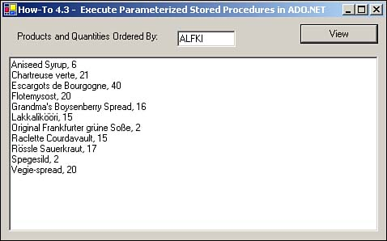

To take advantage of stored procedures to their full power, you need to be able to pass parameters so that specific criteria can be used. This How-To describes how to create parameters off the OleDbCommand objects to pass parameters to SQL Server.
You need to execute a parameterized stored procedure in your application. How do you do this using Visual Basic .NET and ADO.NET?
In ADO, you have a Command object to execute stored procedures, among other tasks. In ADO.NET, you also have a Command object that performs basically the same task. In fact, many of the properties and methods that you use are the same. You can see a list of those in Table 4.4.
|
Object |
Property |
Description/Method |
|---|---|---|
|
Connection |
ConnectionString |
Contains the connection string that is used. |
|
Connection |
Open |
Opens the connection that the Command object uses. |
|
Command |
cmdText |
Specifies the SQL statement to use. Can be SQL statement or names of objects such as tables or stored procedures. |
|
Command |
Connection |
Uses the Connection object. |
|
Command |
CommandType |
Specifies the type of command you want to execute. Can be one of the following command types: StoredProcedure, DirectTable, or Text. |
|
Command |
Parameters |
Parameters to pass to the stored procedure. |
|
Command |
ExecuteReader |
Creates a DataReader object with the data that the command object specifies. |
|
DataReader |
Read |
Reads the next record in the DataReader, and also tests the end of the data returned. |
|
DataReader |
GetString |
Returns the current record, getting the column specified, and returns it as string. |
|
DataReader |
GetInt32 |
Returns the current record, getting the column specified, and returns it as 32-bit integer. |
You will use these objects and their properties and methods for the following steps.
Open and run the VB.NET-Chapter 4 solution. From the main form, click on the command button with the caption How-To 4.3. When the form loads, click on the View button to display the orders for the customer ID that is specified. By default, this is ALKI. A TextBox control is then displayed on the bottom of the form. You can see the form in Figure 4.2.
Create a new Windows Form.
Add the following controls, setting the properties as listed in Table 4.5.
|
Object |
Property |
Setting |
|---|---|---|
|
Label |
Name Caption |
Label1 Products and Quantities Ordered By: |
|
TextBox |
Name Text |
txtCustID ALFKI |
|
Button |
Name Text |
btnView &View |
|
TextBox |
Name MultiLine |
txtResults True |
Enter the following code to the Click event btnView. This code takes the connection and creates the command object. The name of the stored procedure is passed, and the command type is specified, which is CommandType.StoredProcedure. Next, parameters and the DataReader are created. The last task is to iterate through the data and add it to the display text box.
Private Sub btnView_Click(ByVal sender As System.Object, _
ByVal e As System.EventArgs) Handles btnView.Click
Dim ocnn As New OleDb.OleDbConnection(BuildCnnStr("(local)",
"Northwind"))
Dim ocmdCustHist As New OleDb.OleDbCommand("CustOrderHist", ocnn)
Dim odrCustHist As OleDb.OleDbDataReader
Try
'-- Specify the name of the stored procedure
ocmdCustHist.CommandType = CommandType.StoredProcedure
'-- Specify the parameters.
ocmdCustHist.Parameters.Add("@CustomerID", Me.txtCustID.Text)
'-- Open the connection object.
ocnn.Open()
'-- Establish the DataRead object.
odrCustHist = _
ocmdCustHist.ExecuteReader(CommandBehavior.SequentialAccess)
'-- Iterate through the data loaded, building the results string.
Do While odrCustHist.Read
Me.txtResults.Text &= odrCustHist.GetString(0) & _
", " & odrCustHist.GetInt32(1) & vbCrLf
Loop
Catch excpData As Exception
MessageBox.Show("Error Occurred: " & excpData.Message)
End Try
End Sub

When the user clicks on the View button with Customer ID filled in, the text box below is filled in, displaying order information for that customer.
Using the technique presented here, you can pretty well perform the majority of the tasks you need to by using Command objects and stored procedures.